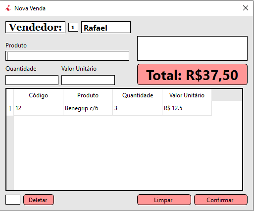

Relatório
RelatórioResumo
Aplicação Desktop para sistema de vendas e manutenção de estoque de fármacia desenvolvido em C++ com uso do framework QT-Creator e Banco de Dados SQlite. O sistema conta com features de cadastro de novos funcionários especificando nível de acesso ao sistema, quadro geral de funcionários de acordo com suas especificações, tela de vendas para realização de novas vendas e visualização de vendas já realizadas de acordo com o dia selecionado para visualização, além de da tela de estoque responsável pela manutenção de quantidade e informações de todos os produtos armazenados.
Imagens do Sistema
Tela de Login:

Quadro de Funcionários:

Tela de vendas:
Histórico de vendas: